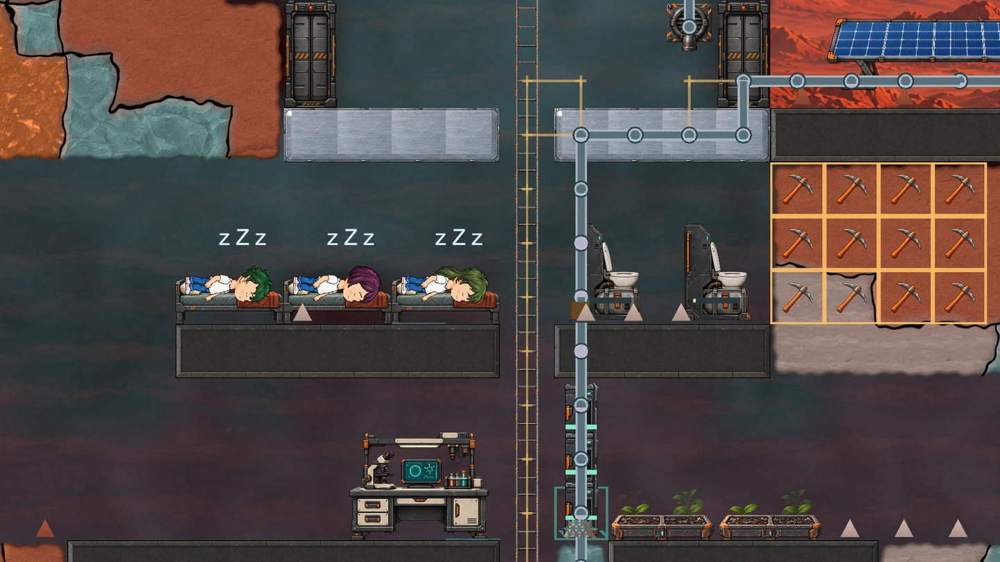
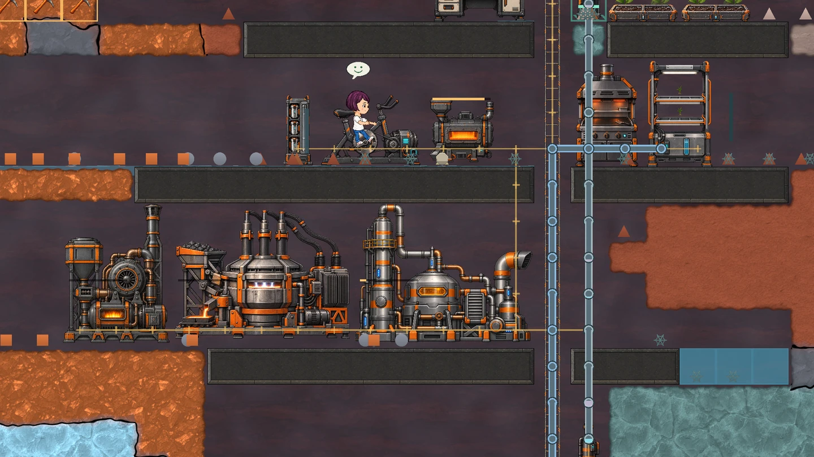

This first journal looks at the game as it is being built. The screenshots come from a player’s saved colony, with the game camera moved to show different areas. Visuals and balance are still changing.
A colony has its own rhythm.
A useful base is more than a row of machines. The settlers need oxygen, meals and somewhere to sleep. They move between work and rest, carry materials and keep the settlement running. In this Sol 28 save, living spaces sit above the workshops, linked by a central ladder.

From raw ore to new possibilities.
The latest production update adds an electric arc furnace for metal ingots and slag, a chemical factory, and an advanced research facility with liquid storage. A small gas pump adds another way to move gas into a pipe network. These facilities extend the early survival base into a place that can process resources and support more demanding research.
Power and transport become part of the layout. A machine needs a supply route as well as a free patch of ground. Recipes, internal storage and connected pipes determine whether the production line can keep going.

The interesting part is the connection.
Potatoes, rice and corn already have different growing requirements. Harvests feed cooking recipes; research work unlocks buildings; power, gas and liquid networks connect facilities. Temperature and phase changes mean the environment can affect these plans as the colony expands.
We are also reducing unnecessary errands. Storage replenishment uses a lower threshold to start a refill, then continues toward the target amount. The goal is to give settlers useful stretches of work instead of sending them back for every small amount consumed. Ladder movement and supply routes matter when planning a larger base.
More depth, with a steadier foundation.
The next focus is the survival and production loop: keeping food, oxygen, water and power dependable over longer sessions. We will keep testing balance and performance as the base grows. The opening cinematic now runs alongside new-world generation, so the journey into the colony can begin while the world is being prepared.
The broader setting includes a fractured Earth, rival Martian settlements and traces of native microbial life. Those ideas belong to the world we are building toward. Today’s work is making the small colony underneath it feel coherent and worth caring for.